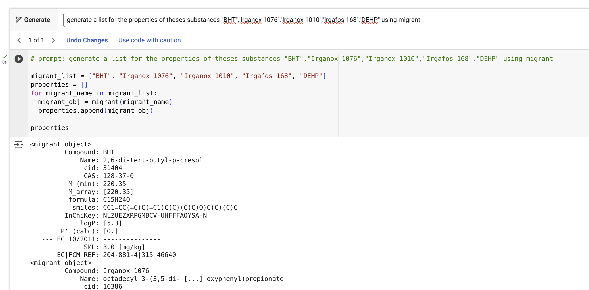
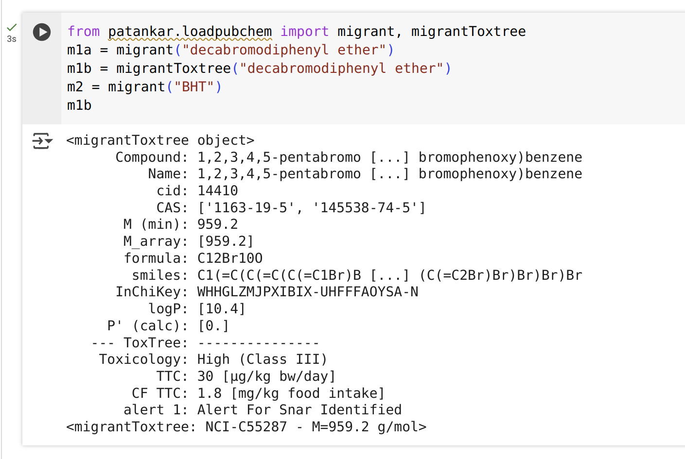
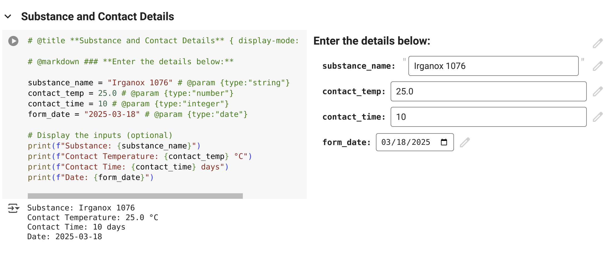
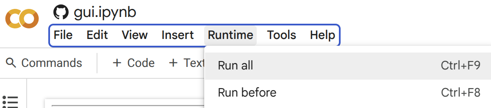
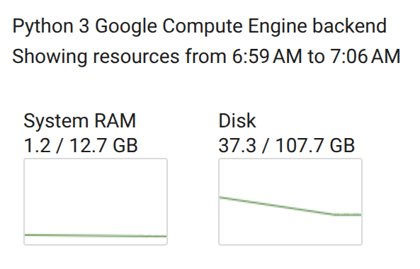
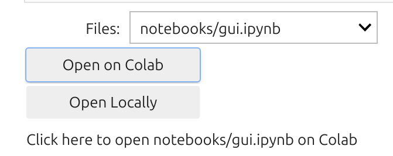
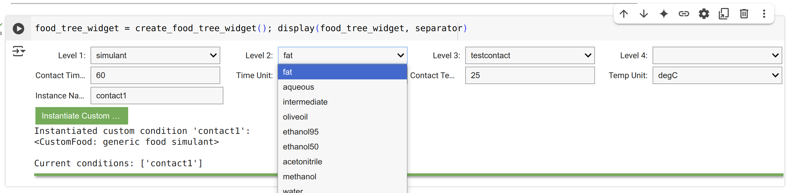
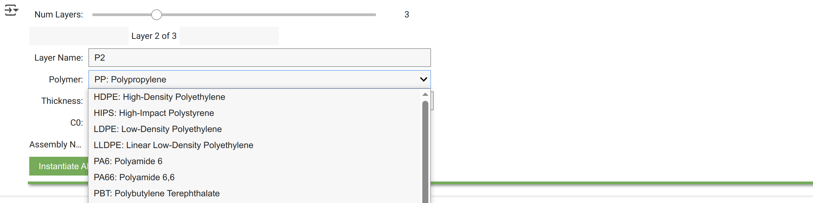
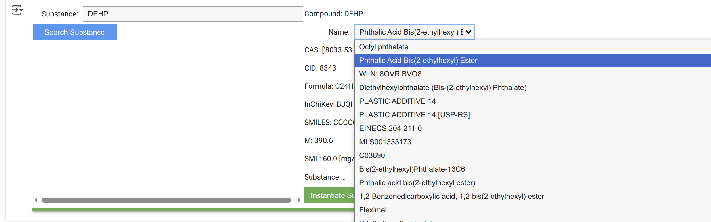

🚀 Run your own SFPPy on Google Colab ⋆.˚☁️⋆ in Just 2 Minutes! 🎉
SFPPy is fully compatible with Google Colab and AI tools! 🚀 This quick setup provides full functionality while ensuring privacy and confidentiality. In just a few clicks 🖱️, you'll have the entire SFPPy framework cloned into your private workspace. 🛡️✨
🔹 Why Google Colab ❓
Google Colab (colab.research.google.com) is a free, cloud-based Python environment 🆓☁️🐍👨🏻💻 that enables seamless execution of computational workflows 🔀 without requiring local installation. When combined with the SFPPy framework 🍏⏩🍎, Colab offers a powerful and flexible platform for running simulations, analyzing chemical migration data, and leveraging AI-driven tools 🤖.
⚡ Why AI? 🤖👍
SFPPy is designed with a highly modular and Pythonic architecture, making it seamlessly compatible with advanced AI systems such as:
📌 Bottom line: AI can assist in code generation, optimization, documentation, debugging, and even regulatory compliance analysis when working with SFPPy. 🚀
🔍 Why AI Works So Well with SFPPy ❓
- 1️⃣ Open & Readable Codebase – The well-structured, clean design makes it easy for AI to parse and manipulate.
- 2️⃣ Extensive Inline Documentation – AI can understand, explain, and modify
SFPPyfunctions effortlessly. - 3️⃣ Clear Interfaces & APIs – Defined methods and structured classes ensure smooth interaction with AI tools.
- 4️⃣ Automatic Code Generation & Explanation – AI can generate, complete, or refactor
SFPPyscripts using its class-based approach. - 5️⃣ Modular & Extensible Design –
SFPPy’s architecture (layer objects, food-contact classes, Patankar-based solvers) breaks down complex operations into small, well-labeled steps, making it easy to extend or debug with AI assistance.
## 1 | 📌 **Quick Setup Guide**
Tip
With Colab, SFPPy can be accessed from any device, including:
Windows, macOS, Linux (no installation needed)
Tablets or mobile devices (for quick analysis on the go)
This makes it ideal for:
✅ Academics & Researchers conducting chemical migration studies ✅ Regulatory Experts analyzing EU 10/2011 compliance and others ✅ Industry Professionals performing safety assessments
Follow these simple steps to get SFPPy running in Google Colab:
| 🔹Step 1: Open Google Colab. 🔹 Connect using your Google Account (free). ✅ |
|
| 🔹 Step 2: Open a Notebook from GitHub. 🔹 In Google Colab, select "Open Notebook" ➝ Click the GitHub tab. 🔹 Paste this repository URL: 👉 https://github.com/ovitrac/SFPPy 🔹 Select index.ipynb and open it. 📂 |
|
| 🔹 Step 3: Scroll to "Minimal Setup for SFPPy Core". 🔹 Run the cell by clicking ▶️ or pressing Ctrl+Enter. 🔹 The entire SFPPy framework will be cloned into your private workspace. 🔹 Once you see the SFPPy banner, everything is ready! 🎨✅ |
|
| 🔹 Step 4: Run the next cells one by one. 🔹 This will activate the graphical interface to explore examples and notebooks. 🖥️✨ |
|
| 🔹 Step 5: The interface provides interactive widgets to explore examples and notebooks. 📊🔧 | |
| 🔹 Step 6: Run examples directly inside the notebook. 🏃💡 | |
| 🔹 Step 7: Google Colab allows one notebook open per session. 🔹 Use the final widget to browse other notebooks and find relevant code snippets. 📚🔍 |
|
| 🔹 Step 8: The left panel gives access to all cloned SFPPy files. 🔹 You can open and edit Python scripts directly in Google Colab! 📝👨💻 |
🎯 Congratulations! SFPPy is running in Google Colab! 🎉🚀
🤖 2 | AI-Powered Code Assistance!
Colab AI can generate and modify Python code based on SFPPy.
Example prompt:
"Generate a list of properties forBHT,Irganox 1076,Irganox 1010,Irgafos 168, andDEHPusing migrant."

## 🏗 3 | **Advanced Features & Installation**
Important
SFPPy on Collab includes Toxtree, PubChem integration, and 🇪🇺 EU 10/2011 positive list support.
Lists from 🇺🇸 and 🇨🇳 are pending.
xxxxxxxxxxfrom patankar.loadpubchem import migrant, migrantToxtree # Chemical database toolsm1a = migrant("decabromodiphenyl ether") # Without ToxTree outputsm1b = migrantToxtree("decabromodiphenyl ether") # With ToxTree outputsm2 = migrant("BHT") # Positively listed substancem1b # Display results
📝 4 | Using Forms in Google Colab
Tip
Google Colab supports interactive forms for structured data input.
xxxxxxxxxx# Example Colab Form%%form --col 2# @title **Substance Contact Details** { display-mode: "form" }# @markdown ### **Enter the details below:**substance_name = "Irganox 1076" # @param {type:"string"}contact_temp = 25.0 # @param {type:"number"}contact_time = 10 # @param {type:"integer"}form_date = "2025-03-18" # @param {type:"date"}print(f"Substance: {substance_name}")print(f"Contact Temperature: {contact_temp} °C")print(f"Contact Time: {contact_time} days")print(f"Date: {form_date}")
🎯 5 | Tips & Best Practices with Cloud Resources
Tip
Colab provides free CPU and GPU access, which can be leveraged for:
Complex chemical migration modeling
Monte Carlo simulations with fast execution
Machine learning applications in regulatory compliance
✅ 5.1 | Running All Cells
Execute all notebook cells via Runtime → Run All.

⚡ 5.2 | Resource Optimization
Even without a GPU, SFPPy runs efficiently on Colab’s CPU-optimized environment, completing most calculations in typically under one or two seconds 🏎️.

📂 5.3 | Managing Notebooks
Open additional SFPPy notebooks from
index.ipynb.
Each notebook runs in an isolated session (Google policy).
📂 5.4 | Graphical User Interface
SFPPyoffers a suite of interactive widgets that simplify the design of complex migration scenarios—requiring little to no coding. These widgets are fully functional in Google Colab and are readily available in thegui.ipynbnotebook.While they provide an intuitive, user-friendly interface, AI assistants may struggle to fully interpret user intent when interacting with graphical elements. However, they remain a powerful tool for streamlining workflows and enhancing usability in Colab. 🚀



💾 6 | Persistent Storage via Google Drive
Caution
Google Colab runs in a temporary environment, meaning files and changes 📂 will be lost once the session ends.
Tip
📥 You can download your scripts, images and text from your browser, but saving files to Google Drive is the best option. This tutorial will guide you through:
✅ Mounting Google Drive in Google Colab
✅ Saving specific files (scripts, results) or datasets
✅ Saving an entire GitHub repository
🚀 6.1 - Step 1 | Mount Google Drive
Before saving any data, you need to connect Google Drive to Google Colab.
📌 Run the following code:
xxxxxxxxxxfrom google.colab import drivedrive.mount('/content/drive')🔹 This will prompt you to authorize access to your Google Drive.
🔹 Follow the on-screen instructions, copy the authentication code, and paste it into the prompt.
🔹 Once authenticated, Google Drive will be available under the /content/drive/My Drive/ path.
📂 6.2 - Step 2 | Create a Folder in Google Drive
To keep your files organized, create a dedicated folder in your Google Drive. You can do this manually or using Python:
xxxxxxxxxximport osfrom google.colab import drive
# Mount Google Drivedrive.mount('/content/drive')
# Create a folder inside Google Drivefolder_path = "/content/drive/My Drive/Colab_Files"os.makedirs(folder_path, exist_ok=True)
print(f"Folder created at: {folder_path}")🔹 This code will create a folder named "Colab_Files" inside Google Drive.
🔹 If the folder already exists, the script will not overwrite it.
📜 6.3 - Step 3 | Save a File to Google Drive
To save a simple text file or any generated data:
xxxxxxxxxxfile_path = "/content/drive/My Drive/Colab_Files/sample.txt"
# Write a sample filewith open(file_path, "w") as file: file.write("Hello, World from Google Colab!")
print(f"File saved at: {file_path}")🔹 This saves "sample.txt" in Colab_Files inside Google Drive.
🔹 You can open Google Drive and check My Drive > Colab_Files > sample.txt.
🗂 6.4 - Step 4 | Save an Entire Repository to Google Drive
To save a GitHub repository or any directory to Google Drive, follow these steps:
6.4.1 | Clone the Repository to Colab
First, clone your GitHub repo inside Colab:
xxxxxxxxxx!git clone https://github.com/ovitrac/SFPPy.git /content/SFPPyThis will create a local copy of the repository in Colab under /content/SFPPy/.
6.4.2 | Copy the Repository to Google Drive
Now, move the entire repository to Google Drive:
xxxxxxxxxximport shutil
repo_path = "/content/SFPPy"drive_repo_path = "/content/drive/My Drive/SFPPy_Backup"
# Copy the repository to Google Driveshutil.copytree(repo_path, drive_repo_path)
print(f"Repository saved at: {drive_repo_path}")🔹 This copies the entire SFPPy repository to your Google Drive under My Drive > SFPPy_Backup.
🔄 6.5 - Step 5 | Load Files Back from Google Drive
If you need to reload a saved file in a future Colab session:
xxxxxxxxxxfile_path = "/content/drive/My Drive/Colab_Files/sample.txt"
# Read the filewith open(file_path, "r") as file: content = file.read()
print("File Content:", content)Similarly, to restore the full repository:
xxxxxxxxxximport shutil
# Define pathsdrive_repo_path = "/content/drive/My Drive/SFPPy_Backup"local_repo_path = "/content/SFPPy"
# Copy back to Colabshutil.copytree(drive_repo_path, local_repo_path)
print("Repository restored in:", local_repo_path)✅ 6.6 | Final Notes
🔹 Google Colab's storage is temporary – always save important work to Google Drive.
🔹 Use shutil.copytree to back up and restore large folders.
🔹 Google Drive syncs automatically, so you can access files from anywhere.
🔗 Now your files and repository are safe inside Google Drive! 🚀
🎉 You're now ready to explore SFPPy, run examples, and customize scripts!
Do not forget to download your scripts on Google Drive on your local disk.💡🔬
⋆.˚🦋༘⋆🍃°.☁️ • ๑ ˙☕
🔗 More details 👉 SFPPy GitHub Repository
Contact Olivier Vitrac for questions | Website | Documentation